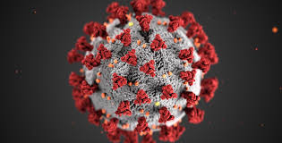

Welcome to our Covid - 19 dashboard. This dashboard contains basic information on the Covid - 19 pandemic such as information on deaths, recovered, total cases and other info such as ways to prevent the spread.
Covid - 19 is a deadly and fast spreading virus that originated in Wuhan, China. It attacks your lungs and respitory system and causes the lungs to shut down. This is very deadly as the stoppage of breathing is a very fast way to die, but it also means that the virus can be contracted not only through contect, but through inhaling it or putting your hands near your face.
Some common sypmtoms include:
- fever
- dry cough
- tiredness
Some much more serious symptoms include:
- difficulty breathing or shortness of breath
- chest pain or pressure
- loss of speech or movement
If you have noticed any of these more sommon symptoms, please take serious action to stay inside and self isolate yourself from anyone. If you notice any of the more serious symptoms, you must immediatly contact local health services and while waiting for them to arrive, self isolate and don't go outside as you are putting everyone at risk.
Continue to the next page to see Covid - 19 in numbers and the last page for ways top stop the spread!

About us
The two people working on this site are Ethan Urbanky and Noah Ho, two grade 9 students. We are amature coders and our client is out teacher, Mr Hoel. This site uses HTML, CSS, JavaScript and Python which are the languages we learned this year.